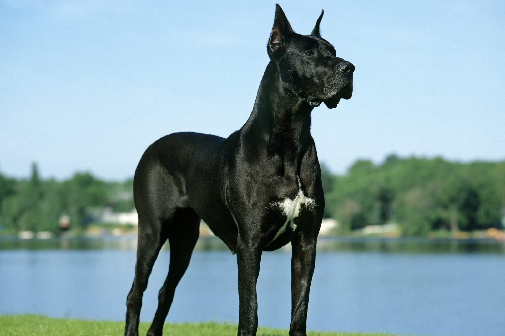

Német Dog
A Német Dog, vagy más néven Német Doggen, hatalmas termetével és barátságos természetével egyaránt elvarázsolja az állatbarátokat. Ezek a kutyák rendkívül hűségesek és kedvesek, ideális társak lehetnek családoknak és aktív életet élő személyeknek egyaránt. Az impozáns megjelenésű Német Dogok méretükből adódóan kiemelkednek a tömegből, de ennek ellenére békés és játékos természetűek. Jól illeszkednek egy családi környezetbe és szeretik a gyerekeket.A Német Dog egyéb tulajdonságai között említhetjük a könnyen kezelhető szőrzetüket és az energikus személyiségüket. Ha egy olyan kutyafajtát keresel, amely magában foglalja az erőt, a szépséget és a jószívűséget, a Német Dog ideális választás lehet számodra.
Golden Retriever
A Golden Retriever egy kiválóan kedves és intelligens kutyafajta. Ismertek a barátságos természetükről és könnyen taníthatóságukról. Ideális választás családoknak, mivel jól kijönnek gyerekekkel és más háziállatokkal is. A Golden Retrieverek aktív kutyák, akik élvezik a mozgást és szívesen részt vesznek családi tevékenységekben. A selymes szőrzetük és ragyogó arany színük a fajta egyik jellegzetessége. Ha olyan kutyát keresel, amely örömmel fogad és mindig kész a játékra, a Golden Retriever remek választás lehet.
Border Collie

A Border Collie a munkakedv, intelligencia és gyorsaság kombinációjával rendelkezik. Ezek a kutyák rendkívül kifinomultak és könnyen tanulnak, ami teszi őket ideális választássá olyan gazdák számára, akik kihívást keresnek. A Border Collie-k aktív kutyák, és imádnak részt venni különböző tevékenységekben. Legyen szó agility-ről, szellemi kihívásokról vagy hosszú sétákról, a Border Collie mindig készen áll az új kalandokra. Szép szőrzetük és éber tekintetük miatt ezek a kutyák nemcsak intelligensek, hanem vonzó külsejűek is. Ha egy olyan kutyát szeretnél, amely nemcsak társad, hanem aktív partnered is lehet, a Border Collie remek választás.
Boxer

A Boxer egy erős, izmos kutyafajta, amely rendkívül élénk és barátságos. Ezek a kutyák híresek játékos természetükről és hűségükről. Ideális választás lehet családoknak és aktív életet élő személyeknek egyaránt. A Boxerek kiválóan alkalmasak kiképzésre, mivel intelligensek és engedelmesek. Jól kijönnek a gyerekekkel és más háziállatokkal is. Aktívak, szeretik a mozgást és a játékot. A Boxerek rövid szőrzetük miatt könnyen kezelhetőek, és az élénk személyiségük miatt sokak számára vonzó kutyafajtát alkotnak. Ha olyan kutyát keresel, amely energikus, barátságos és könnyen kezelhető, a Boxer remek választás lehet.